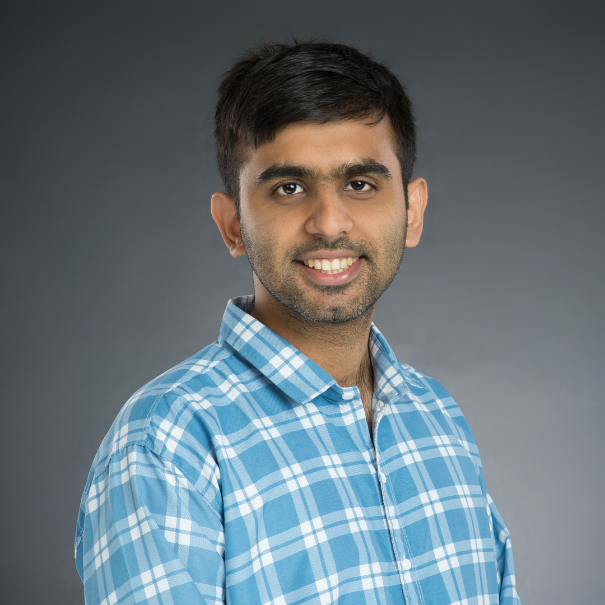

Neurotechnology
Wireless and miniaturized systems for deep brain stimulation, photometry, and surface hemodynamics in freely moving rodents.
Postdoctoral research associate
I build optical, electrical, and computational tools for studying neural activity and hemodynamics in behaving animals.

Current role
I am a postdoctoral research associate in Dr. Elizabeth Hillman's lab at St. Jude Children's Research Hospital. My work connects optical imaging, implantable and wireless devices, signal processing, and systems neuroscience, with a focus on making experiments in freely moving animals more informative and less constrained.
Research
Wireless and miniaturized systems for deep brain stimulation, photometry, and surface hemodynamics in freely moving rodents.
Fiber-based and widefield measurements of neural activity, fluorescence, oxygenation, and motion-linked artifacts.
Data-driven methods for extracting physiology from noisy in-vivo recordings and separating signal from behavior-related artifacts.
Appointments
Selected publications
Journal of Neurophysiology, 2025
Journal of Biomedical Optics, 2025
Frontiers in Robotics and AI, 2025
Neurophotonics, 2024
IEEE BioCAS, 2023
Talks
Recognition
Teaching
Electronic Devices and Materials, University of Calgary
Circuits II, University of Calgary
Digital Circuits, University of Calgary
Biomedical Signals, Systems and Instrumentation I, University of Calgary
Contact